for Canadian users
Globus is a service for fast, reliable, secure transfer of files. Designed specifically for researchers, Globus has an easy-to-use interface with background monitoring features that automate the management of file transfers between any two resources, whether they are on an Alliance cluster, another supercomputing facility, a campus cluster, lab server, desktop or laptop. If you are new to Globus make sure to read the Globus official documentation and the specific Documentation for Canadian users.
Using Globus collection to share data with collaborators
-
What are Globus endpoints and collections
Within the Globus ecosystem, Endpoints and Collections are key, closely related entities. An Endpoint represents a specific server or cluster of servers which provides access to storage. A Collection represents a location containing data plus the policies and permissions for accessing that data. There are two types of collections, a Mapped Collection is a single user’s access to an Endpoint (ex: User's home directory), and a Guest Collection is a share-point on a Mapped Collection (ex: a subdirectory user want to share).
Ref. Globus Collection and Endpoints
-
Accessing your Mapped Collections via the Globus portal
Go to the Globus File Manager: https://globus.alliancecan.ca/file-manager
This page shows you 2 navigation panels, each to be connected to storage Collections to enable data transfer between the two. Click on the Collection search box on either one side to find available Mapped and/or Guest Collections.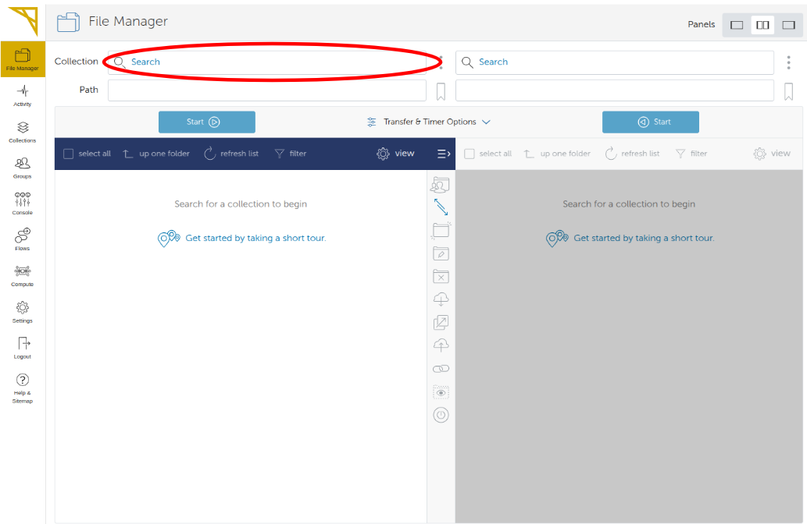
This will lead you to a search page where you type in the name of the collection (or part of it) in the search box. A list of collections to choose from will appear. For example typing 'narval' will offer you to connect to 'Compute Canada - Narval' cluster. Then simply click on your choice.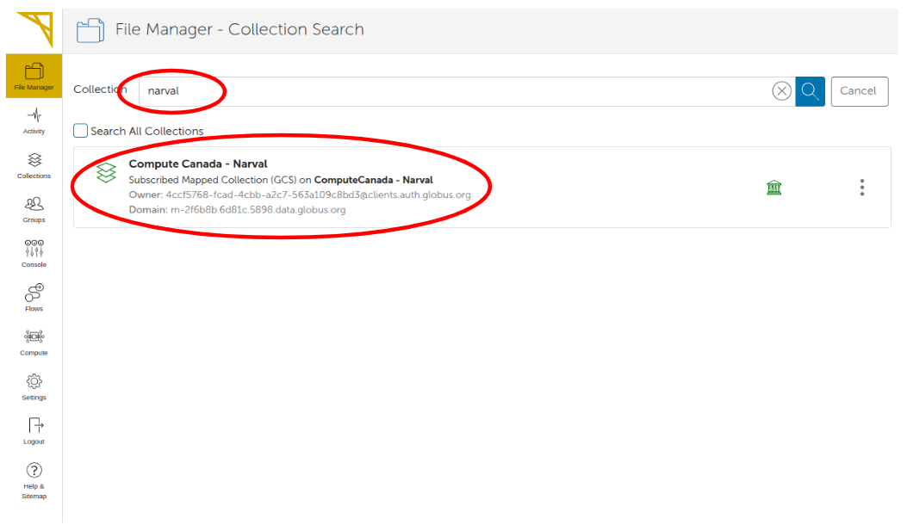
This will likely show you a page to authenticate to the site if you are not already authenticated.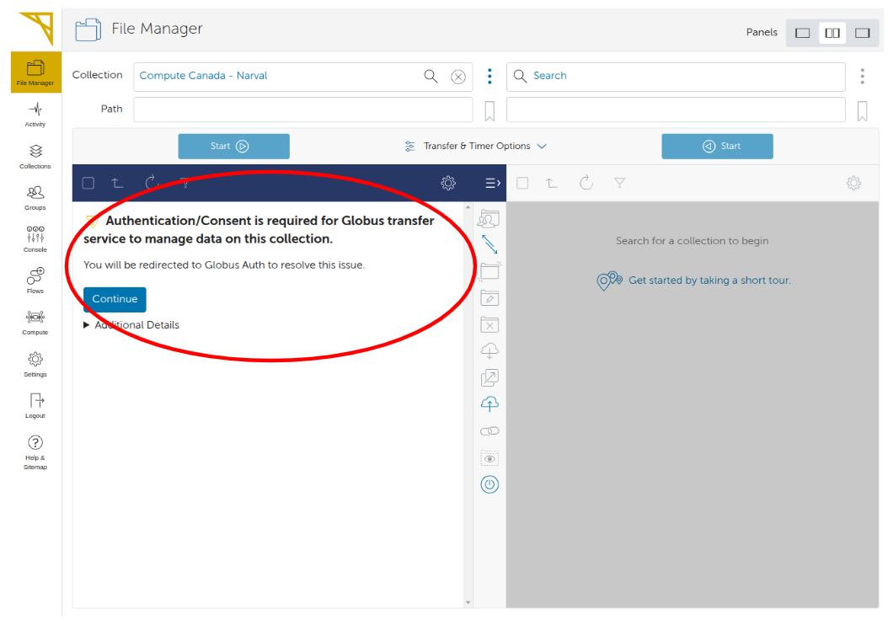
Once in your Mapped Collection (Typically your home directory) you can navigate the tree down to the desired location you want to share with others. In the example below '/home/xxxxx/test-globus/shared-data/'.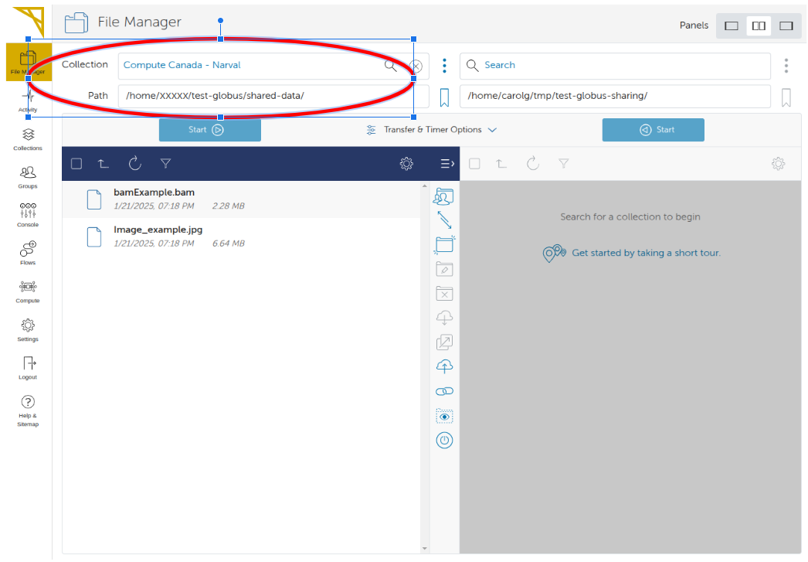
-
Creating a Guest Collection
To create a Guest Collection at a specific location, here '/home/xxxxx/test-globus/shared-data/', click the 3 dots on the right of the path as shown below.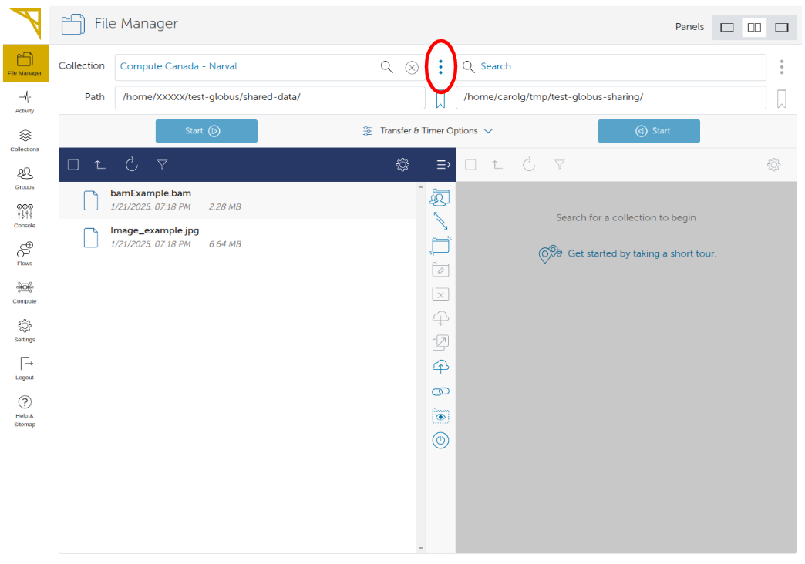
On the next page click on the "Collections" tab. You will see the list of Guest Collections which should be empty at this point. Click on "Add Guest Coolection" on the upper right corner.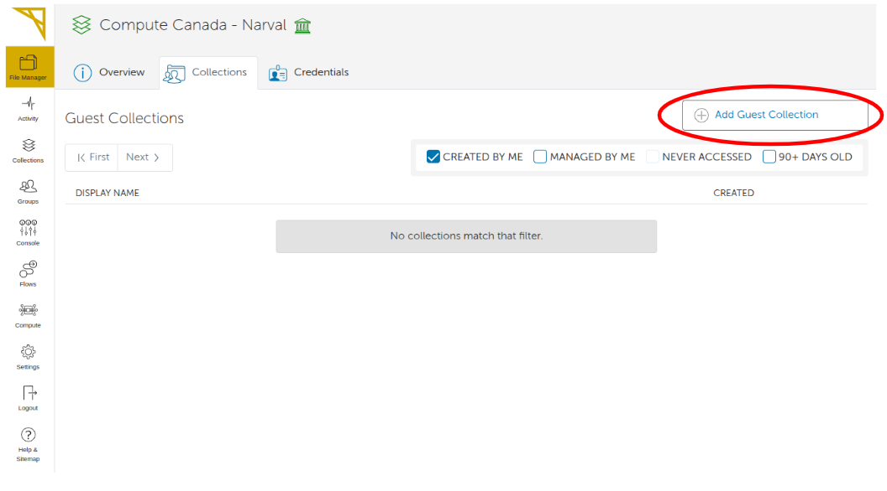
On the next page select the directory location and give the Collection a display name, then press the 'Create Collection' button. Many more attributes can be added to Collections (refer to the documentation for more details).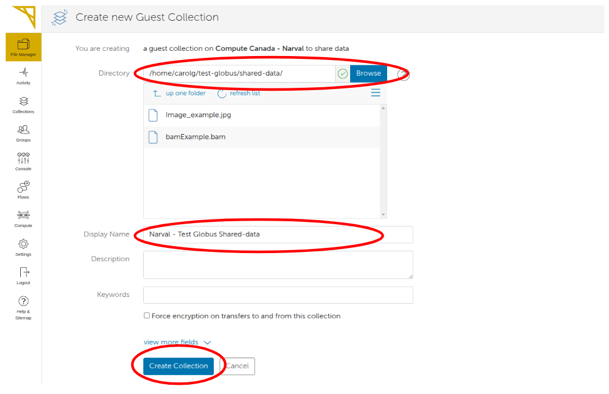
-
Setting the permissions of your Guest Collection
Now that our Collection is created, we set the permissions on this Collection. Go to the Collections using the tab on the left. Select 'Administered by you', then type in the search box the name of your Collection to find it and simply click the desired Collection in the list.On the next page click on the 'Permissions' top tab, then on the button 'Add Permissions - Share With'. As you can see below, you can give read or write permission to specific users, groups or make data accessible to everyone. It is also possible to set permissions to sub-directories of files. Leaving '/' will set the permission for the whole Collection. Click 'Add Permission' once you are done. You can later add additional layers of permissions to the same Collection.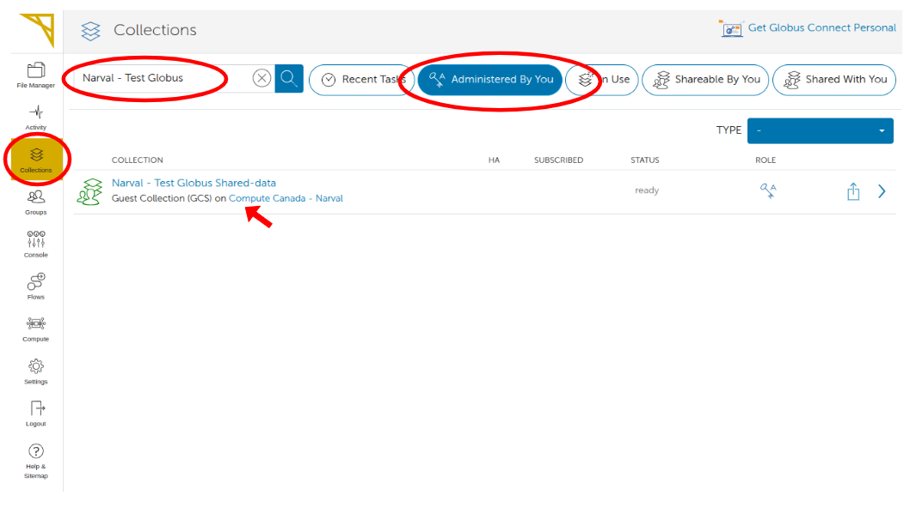
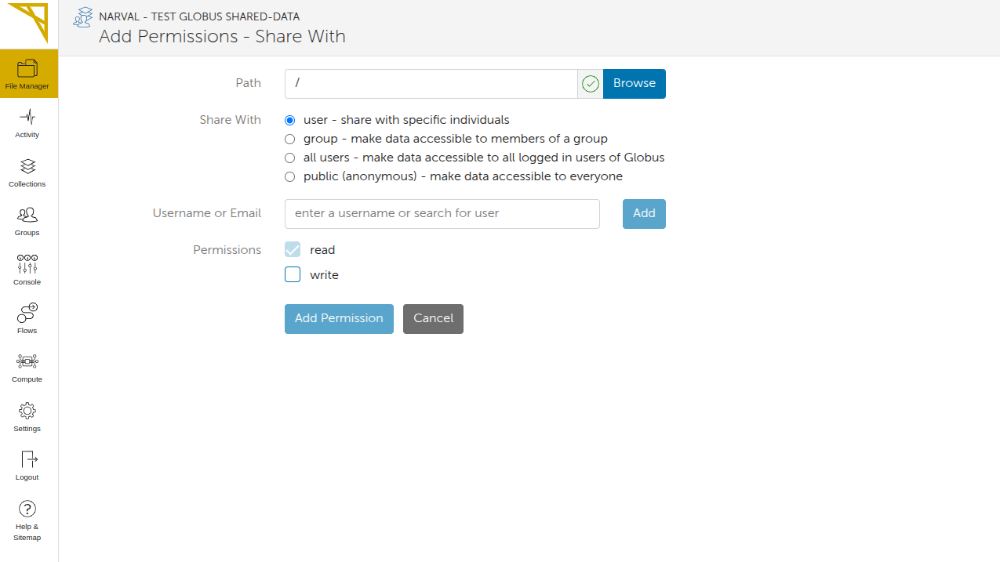
-
Sharing your Collection with the Globus File Manager
First you need to find the shareable link to your Guest Collection. In the Globus File Manager click the 'link' icon on the right side of your Collection as shown below.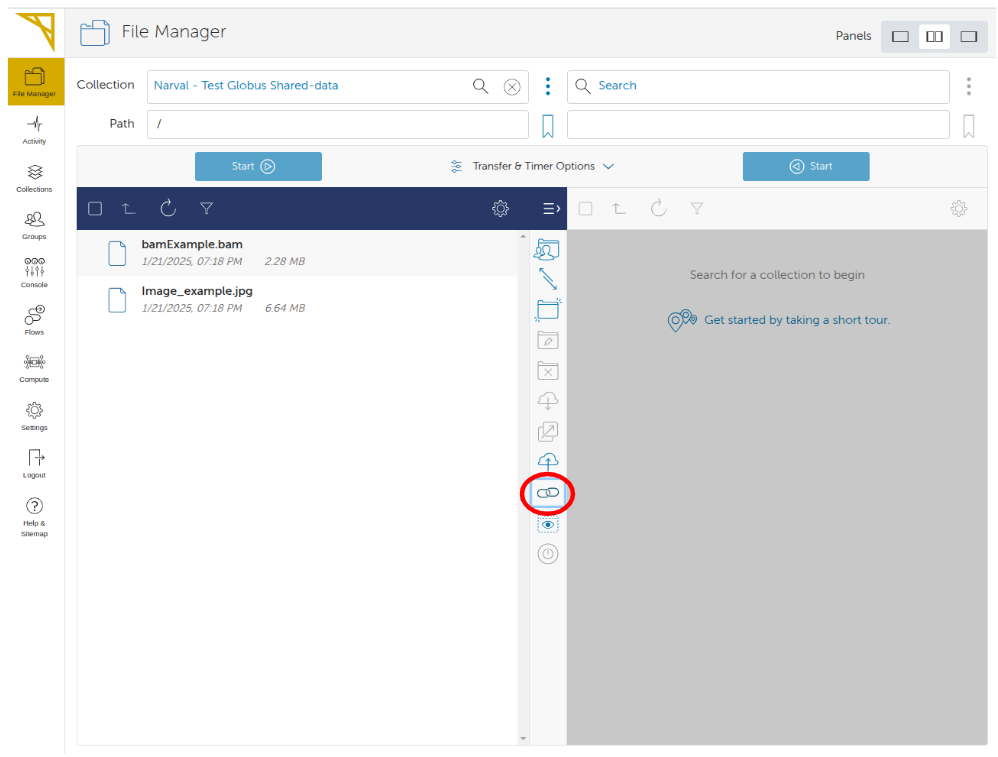
This will show you an icon to copy the URL that link directly to the shared Collection through the Globus File Manager interface (see below). The user will need to login to the Globus Web portal and have access to the Collection.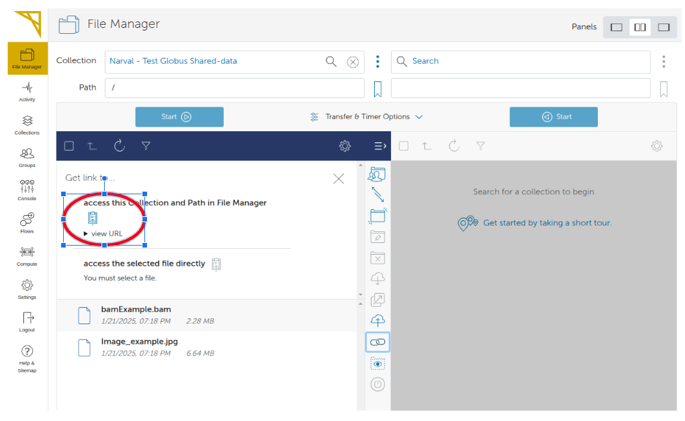
Importing tracks (files) from a Globus Guest Collection
-
First make your Guest Collection accessible to all (public)
In order to import specific data files (tracks) in UseGalaxy.ca from Globus, or view tracks located in your Collection directly from the UCSC Genome Browser, the permissions need to be set to public. In your Collection, go to the 'Permissions' tab and click 'Add Permissions - Share With'. This time set the permission to public as shown below.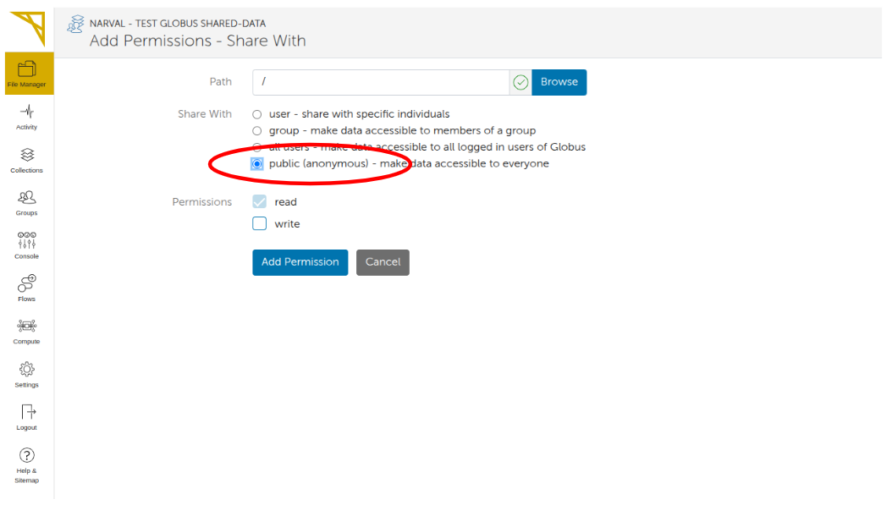
-
Finding out the full URL to directly access a file (track) through http
In order to import data in Galaxy or view a specific track on the UCSC Genome Browser you need to provide the direct URL that will access directly the file through HTTP without the Globus File Manager interface.
Let's say we want to find the URL for a file in our example Collection as shown in the File Manager below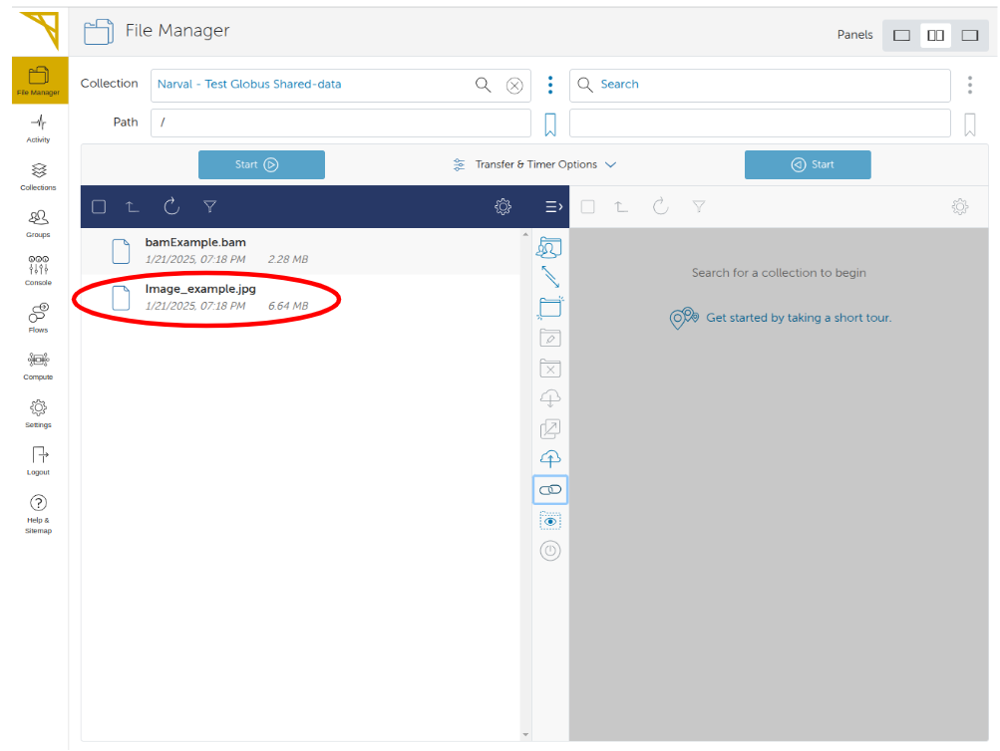
So the path to this file in the Collection is: file_path = '/bamExample.bam'
Then navigate back to the Collection
On the Collection Overview page locate the Domain attribute as shown below: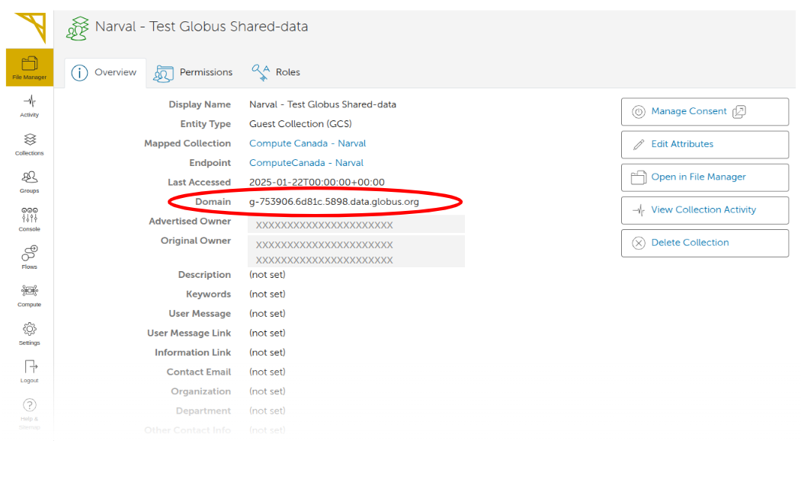
The full URL of the file will then be:
file_url = 'https://g-753906.6d81c.5898.data.globus.org/bamExample.bam'